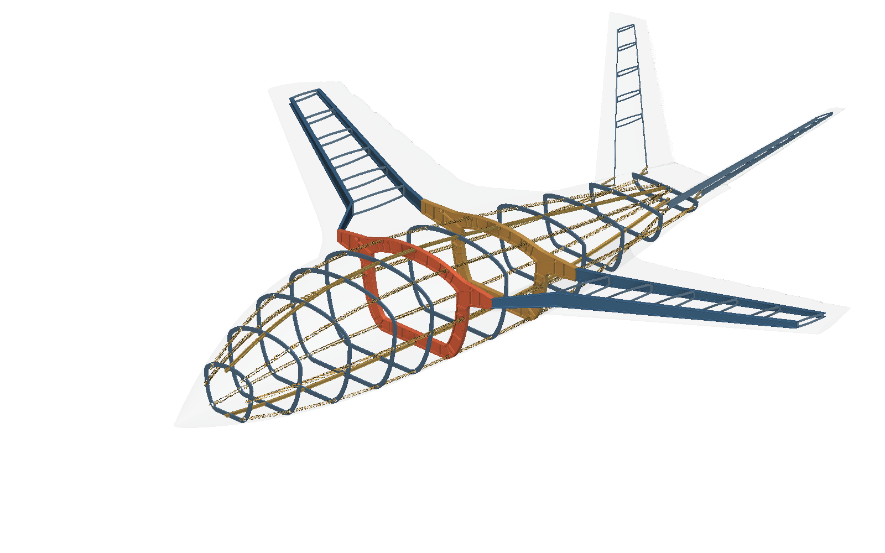
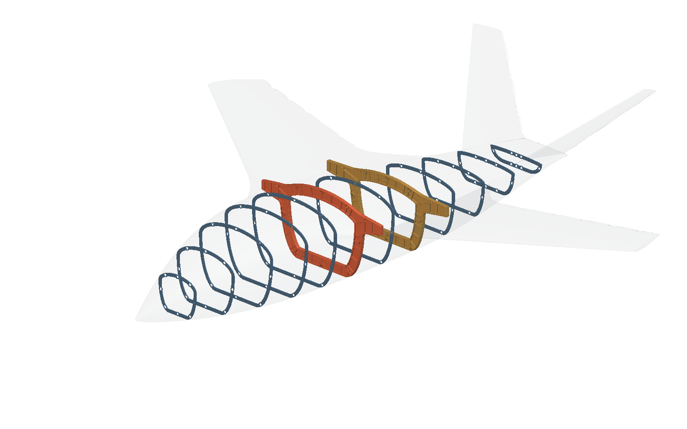
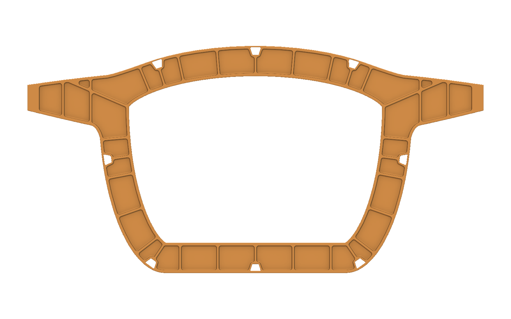
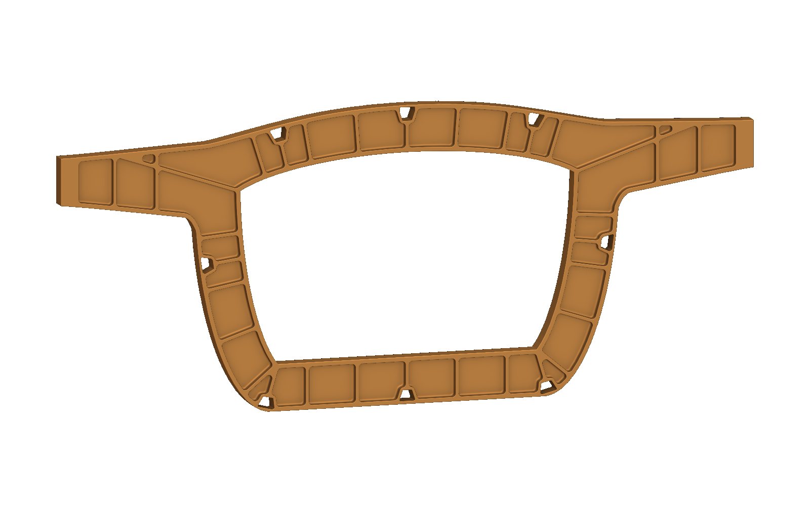
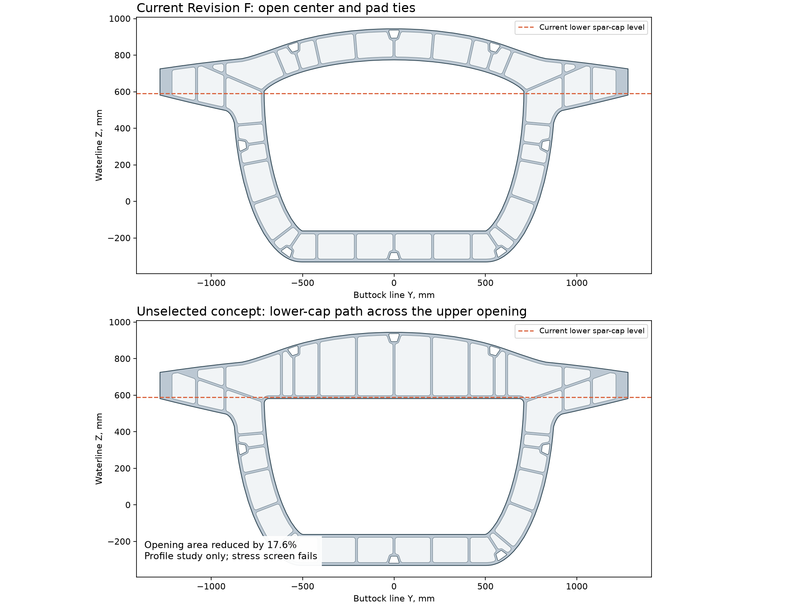

Connect each longeron pad.
Preserve the fitted interfaces.
Two revised primary bulkheads, synchronized compound blocks, and an updated native aircraft assembly.
Current result
Eight 12 mm ribs connect the longeron pads to the inner flange on each primary.
Both primaries have 34 conformal pockets per face and R6.35 mm rolling-ball floor blends. The original stations, outside contours, central openings, and hat clearances remain fixed.
The primary-frame stress and local floor-buckling screens still fail. The spar crossmember interpretation remains open because it could occupy the central opening.
01The revised structure inside the airplane



Thin hat walls can look stippled at aircraft scale in the native implicit preview. Their geometry is unchanged from Revision E; its retained continuity checks and isolated joint views remain applicable.
The wing trade recommends developing the two straight-spar candidate. That relocation is a separate architecture change. This revision installs only the requested local pad ties at the current stations.
02Conformal pockets and continuous local ribs


Each tie follows the shortest local route from its passage pad to the inner flange. The pocket partition moves around this rib. The rounded pocket construction retains the plan radius and rolling-ball floor transition.
The hat passage remains empty through the full primary thickness. The added material occupies former pocket regions. The spar mating envelope and outer aircraft fit match Revision E exactly.
A crossmember across the central opening and a stronger route around its perimeter are different layouts. The first uses equipment space; the second retains a large open center. Neither has been selected for installation.

03Measured CAD mass and the failed structural screens
| Primary | Revision E STEP, kg | Revision F STEP, kg | Change, kg |
|---|---|---|---|
| Forward | 54.903 | 56.080 | +1.177 |
| Aft | 52.684 | 53.937 | +1.253 |
These masses use reimported STEP solid volumes and a proposed density of 2,830 kg/m³. They include the pocket blends and hat passages. They exclude forging stock and separate fittings.
| Primary | Case | Membrane mass proxy, kg | Peak ultimate stress, MPa | Pocket buckling factor |
|---|---|---|---|---|
| Forward, FS 4000 | original | 54.09 | 644 | 0.383 |
| Forward, FS 4000 | ties | 55.23 | 643 | 0.361 |
| Aft, FS 5400 | original | 51.89 | 580 | 0.474 |
| Aft, FS 5400 | ties | 53.13 | 568 | 0.465 |
The before/after calculation uses a 12 mm target plane-stress mesh, the actual passage outlines, 60 mm lands, and 6 mm pocket floors. It uses the same assumed 7,500 lb, 3.8 g, and 1.5 ultimate multiplier as the wing trade.
The study stress ceiling is 250 MPa. The required buckling factor is 1.15 at ultimate load. Both primaries fail both screens. The local ties do not remove the shoulder load concentration.
Membrane mass excludes the three-dimensional fillet volume, so it differs from STEP mass. The model also excludes out-of-plane frame buckling, fastener bearing, contact, and joint compliance.
The full wing trade includes station sweeps, resized wing gauges, load sensitivity, numerical benchmarks, and convergence. It finds a 15.4 kg lighter wing for the two-straight-spar candidate. The larger baseline study ledger is 2.4 kg heavier after primary proxies and replacement fuselage bracing.
04Native verification and how the STEP was made
| Check | Result |
|---|---|
| Native geometry probes | 4,388 checks passed across both primaries at 60/6 mm and 64/8 mm thickness/floor inputs. |
| Embedded custom definitions | Both revised primary outputs match their standalone source expressions. All 54 member expressions match. |
| Fitted interfaces | The outside contour, central opening, complete hat passages, station and spar-root interfaces equal Revision E. |
| Native delivery | Both organized part notebooks and the assembly reopen with all checked states OK. |
| STEP reimport | Each part is one valid solid. Each verification tessellation is one watertight component. |
| STEP / construction comparison | 60,000 sampled surface points per part are checked against the shared construction formula. Maximum residuals: 0.00854 mm, 0.00525 mm. |
The STEP is an independent Open CASCADE B-rep reconstruction from the same outer contour, opening, pocket cores, and passage profiles used by nTop. It is not a direct export of the native implicit body.
- Extrude the shared outer profile and subtract the central opening.
- Add the perimeter edge break.
- Offset each pocket core by the plan radius and extrude its cutter from the residual floor.
- Apply the 6.35 mm rolling-ball fillet to the cutter floor edges, then subtract both face cutters.
- Subtract the rounded hat passage envelopes. Write STEP, reimport it, and check topology, volume, and sampled surface residuals.
Only the two STEP solids were tessellated for verification. Aircraft images render native implicit bodies. Finite surface samples do not establish a global CAM tolerance or structural capacity.
The GUI parameter setter stalled in this build. The nominal GUI checks were retained. Changed-value checks completed through explicit native CLI custom calls. The recovery record identifies the owned process and retained results.
05Edit the separate models and refresh the assembly
The Bulkheads folder contains twelve separate station notebooks. The Longerons folder contains eight separate hat models. The two updated primaries retain dimensioned axial-thickness and residual-floor inputs.
Each primary is an embedded custom definition in the main model. Saving the standalone part does not automatically change that embedded snapshot. Refresh the definition, verify the input contract, then reopen and check the assembly.
Assembly thickness controls remain at their prior limits: primary depth 60-64 mm and residual floor 6-8 mm. These are geometry controls, not substantiated allowable ranges.
Alloy and temper, forging supplier, aircraft loads, attachment design, equipment clearances, manufacturing tolerances, and structural substantiation remain open. The measured geometry is a proposed revision, not a manufacturing or flight release.